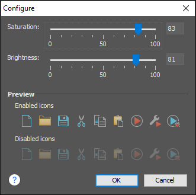

Appearance Preferences
This preferences page contains various options that allow you to change the appearance of the user interface of Oxygen XML Editor. To configure the Appearance options, open the Preferences dialog box and go to Appearance.
The following options are available in the Appearance preferences page:
- Look and Feel
- This option allows you to change the graphic style (look and feel) of the user interface. Depending on the operating system, you can choose between various predefined style options.
- Theme
-
This option allows you to choose predefined color themes that will be applied over the entire user interface. You can select between the following:
- Light (default theme in Windows)
- Classic (default theme in MAC OS)Note: In Windows, if a high contrast theme is detected and the Theme option is set to Classic and the Look and Feel option is set to Default or Windows, Oxygen XML Editor inherits the high contrast theme colors that are set in the operating system.
- Graphite
You can also change various appearance-related options in other preference pages for the selected theme by clicking on the various links in this section.
- Custom Themes
- You can also create custom themes to share with others or use in other
installations of Oxygen XML Editor. To create a custom theme, follow these steps:
- Select a Theme to use as a base.
- Configure the desired options in any of the option pages listed in this preferences page.
- Click Export and specify a name for your custom theme. If you save the theme to the default file path, your custom theme will immediately appear in the Theme drop-down list. Otherwise, if you save it to another location, you can use the Import button to make it appear in the drop-down list.
Note: In OS X (starting with Yosemite), if you choose Graphite for the Theme, it is recommended that you select the Use dark menu and Dock option that is found in . - Theme preview area
- Displays a preview of the current Theme selection (available for predefined color themes).
- Theme management section
-
- Reset
- Resets the theme to its default values (this option is available when the theme is modified).
- Rename
- Changes the name of the theme (not available for default or predefined themes).
- Delete
- Removes the selected theme (not available for default or predefined themes).
- Import
- Allows you to import a color theme from an XML theme file. You can use this option to load an exported custom theme.
- Export
- Allows you to export the current color theme into an XML theme file that can then be shared with others or imported into another installation of Oxygen XML Editor.
- Configure icon saturation and brightness link
-
This link is available if you are using the Graphite theme. It opens a dialog box where you can configure the saturation and brightness for all the icons in Oxygen XML Editor.
Figure 1. Configure Icon Saturation and Brightness Dialog Box 